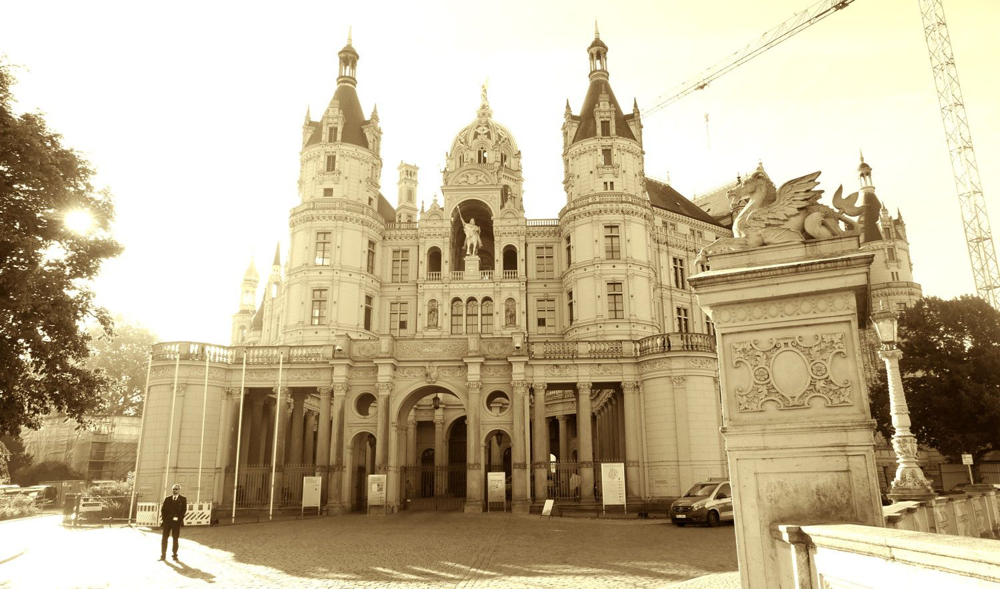

Baustart Broock offiziell

Der Baukran ist unübersehbar. Aber es werden wohl noch ein paar Tage ins Land gehen, bevor das Schlossgut Broock seine geplante Nutzung erreicht haben wird.Der offizielle feierliche Baustart
1. Bauabschnitt: Notsicherung/Sanierung des historischen Schlossgebäudes
am 1. Oktober, der um 14.00 Uhr auf dem Wirtschaftshof vor dem Schloss stattfand,
wurde eingerahmt von Gruß- und Dankesworten sowie kurzen Erläuterungen zu den bevorstehenden enormen Herausforderungen.
Nach der Landtagsabgeordnete der Linken Jeanine Rössler aus Tutow, die das Gelände mit der Ruine in ihrer Kindheit schon als Abenteuerspielplatz kannte, sprach der jüngste Abgeordnete des Deutschen Bundestags Herr Philipp Amthor, der das Projekt mit großem Interesse verfolgt, unterstützt und auch ein Grußwort an die Gäste richtete.
Im Anschluss fand ein geselliger Empfang in der historischen Reithalle statt.
Es geht also voran.